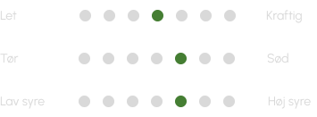
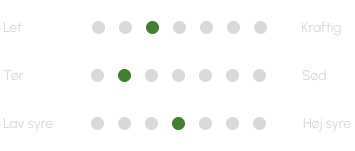

Fremhævede vine
Solaris - Nordic Gold
Nordic Gold er vores prisvindende hvidvin. Den byder på en fyldig smagsoplevelse med en sprød friskhed, der gør den velegnet til både mad og hyggelige øjeblikke.

Solaris - Sweet
Denne vin byder på en blid balance mellem sødme og friskhed, hvor aromaer af modne stenfrugter og honning skaber en varm og indbydende karakter.
Om Vingården
Havblink Vingård er resultatet af mange års passion for vin og natur. Her kan du dykke ned i historien bag vingården, møde druen Solaris, læse om vores vinsmagninger og få indblik i vores vision, mission og værdier
Vinsmagning på Havblink Vingård
Tag med på en smagfuld rejse gennem Havblinks hvidvine. Vi afholder vinsmagning hver anden og fjerde fredag i måneden, hvor du kan opleve vinene, vingården og historien bag - i godt selskab og skønne omgivelser.
Café Havblink
Nyd et glas vin, en kop kaffe eller en tapasplatte i vores hyggelige café med udsigt til vinmarkerne. Et afslappende stop under besøget - midt i vinens verden.